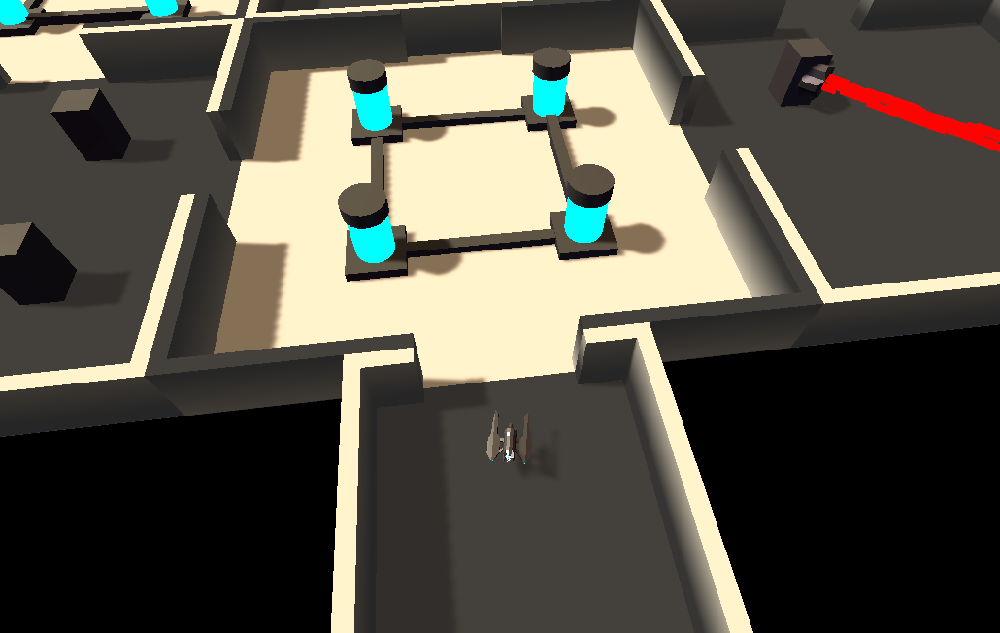

About the project
In the game, the player explores procedurally generated sectors, these sectors contain dungeons and other places of interest where loot and enemies can be found.

The inside of procedurally generated dungeon.
In the first versions of the game the player would need to fly though open-space the reach different dungeons, The dropship was added later to speed up the process of finding and moving to dungeons.

The player can board the dropship to travel quickly.
The dropship system is planned to be reworked in a future update: Instead of freely flying in the dropship, it will function as a "level select" menu where players can fast-travel to dungeons.
Code sample: World generation
The world generator is fairly short, it uses an instance of the System.Random class to generate the world and to avoid other potential objects from interfering with the world generation process.
There are 3 lists in the world generator class that store the prefabs of the structures it spawns in the play area, these structures are devided into small, medium and large.
The large structures will generally contain more resources but also more dangers for the player, large structers are also harder to reach because they spawn further away from the player's spawnpoint.
The spawning of structures is calculated using weights, each structure category has a weight associated with it that influence the chance of it being chosen by the world generator.
The world generator uses 2 sets of weights, the first is associated with the player's spawnpoint and the other with the edge of the playable area. When the world generator picks coordinates to spawn a structure it will decide what the weights are for those coordinates by interpolating between the 2 weight sets.
using System.Collections.Generic;
using UnityEngine;
public class GenerateWorld : MonoBehaviour
{
[SerializeField]
bool AutoSeed; //if true, will generate a random seed on Start
[SerializeField]
int MapSize;
[SerializeField]
int LevelSeed;
[SerializeField]
List LargeStructures = new List();
[SerializeField]
List MediumStructures = new List();
[SerializeField]
List SmallStructures = new List();
[SerializeField]
float[] StartWeights; //random weights at the center of the play area
[SerializeField]
float[] EndWeights; //random weights at the end of the play area
[SerializeField]
int overlapTestBoxSize;
public System.Random Seed;
// Start is called before the first frame update, generates seed if none is given
void Start()
{
GameManager.instance.WorldGenerator = this;
if (AutoSeed)
{
LevelSeed = Random.Range(0, int.MaxValue);
Seed = new System.Random(LevelSeed);
}
else
{
Seed = new System.Random(LevelSeed);
}
SpawnStructures(60);
}
//picks the type(small, medium or large) the structure is going to be, based on distance from the player's spawn point(0, 0)
List PickStructureType(Vector3 Location)
{
float CurrentWeight = 0;
float[] Localweights = new float[StartWeights.Length];
float RandomNbr = (float)Seed.NextDouble();
for (int i = 0; i < StartWeights.Length; i++)
{
float LocalWeight = Mathf.Lerp(StartWeights[i], EndWeights[i], Vector3.Distance(Vector3.zero, Location) / Vector3.Distance(Vector3.zero, new Vector3(MapSize, 0, MapSize)));
Localweights[i] = LocalWeight;
if (CurrentWeight + LocalWeight >= (RandomNbr))
{
switch (i)
{
case 0:
return SmallStructures;
case 1:
return MediumStructures;
case 2:
return LargeStructures;
}
}else
{
CurrentWeight += LocalWeight;
}
}
Debug.LogError("Couldn't generate type");
return null;
}
void SpawnStructures(int amount)
{
for (int i = 0; i < amount; i++)
{
Vector3 Pos = new Vector3(Seed.Next(-MapSize, MapSize), 0, Seed.Next(-MapSize, MapSize));
Quaternion Rot = Quaternion.Euler(0, Seed.Next(0, 361), 0);
List PickedList = new List();
PickedList = PickStructureType(Pos);
//detects overlap
Vector3 overlapTestBoxScale = new Vector3(overlapTestBoxSize, overlapTestBoxSize, overlapTestBoxSize);
Collider[] collidersInsideOverlapBox = new Collider[1];
int numberOfCollidersFound = Physics.OverlapBoxNonAlloc(Pos, overlapTestBoxScale, collidersInsideOverlapBox, Rot);
if (numberOfCollidersFound == 0)
{
GameObject Structure = Instantiate(PickedList[Seed.Next(0, PickedList.Count)]);
Structure.transform.position = Pos;
Structure.transform.rotation = Rot;
}
else
{
Debug.Log("collider found, skipping structure.");
}
}
Code sample: Dungeon Generation
The dungeon generator script generates an individual dungeon, it starts out by placing a starter room and then randomly connecting rooms to the doorways.
This generation process repeats until it has reached the assigned room limit, or when there is no more space to generate new rooms.
using System.Collections;
using System.Collections.Generic;
using UnityEngine;
public class DungeonGenerator : MonoBehaviour
{
public List Tiles;
[Space(20)]
public List StartTiles; //the first tiles aren't connected to anything, so they will have room spawn points on all (possible) sides.
[Space(15)]
public GameObject Deadend; //the dead end is a one-way room, used randomly in the dungeon and to close it off when its max rooms is reached.
public GameObject HardWall; //the hardwall is only a wall, used to close rooms off when there is no space for a full room next to it.
public GameObject ExitInterior; //special interior, the places where the player enters/exits the dungeons.
[Space(20)]
public int MinLength;
public int MaxLength;
[Space(20)]
[SerializeField]
Material FloorMatBase;
[SerializeField]
Material WallMatBase;
[SerializeField]
List DungeonColors;
public List CurrentDungeonTiles;
public List CurrentDungeonDeadEnds;
[HideInInspector]
public int PickedLength;
[HideInInspector]
public int CurrentLength;
[HideInInspector]
public DungeonData Data;
[HideInInspector]
public System.Random seed;
[ContextMenu("Reset Dungeon")]
void ResetDungeon()
{
foreach(Transform tr in transform)
{
Destroy(tr.gameObject);
}
Data.GeneratedDoors.Clear();
CurrentLength = 0;
Awake();
}
void Awake()
{
//TODO: link to world generator, dungeons should be tied to seed
PickedLength = Random.Range(MinLength, MaxLength + 1);
seed = GameManager.instance.WorldGenerator.Seed;
Data = GetComponentInParent();
Color ColorTop = DungeonColors[seed.Next(0, DungeonColors.Count)];
Color ColorBot = ColorTop * 0.05f;
Data.WallMat = Instantiate(WallMatBase);
Data.WallMat.SetColor("BottomColor", ColorBot);
Data.WallMat.SetColor("TopColor", ColorTop);
Data.FloorMat = Instantiate(FloorMatBase);
Data.FloorMat.SetColor("BottomColor", ColorTop);
Data.FloorMat.SetColor("TopColor", ColorBot);
Data.Init();
GameObject FirstTile = Instantiate(StartTiles[seed.Next(0, StartTiles.Count)], transform);
CurrentDungeonTiles.Add(FirstTile);
FirstTile.name += "(Origin)";
}
//rooms that spawn at or above the maxrooms count will call this
public void CheckRoomCount()
{
CancelInvoke("PopulateDungeon");
Invoke("PopulateDungeon", 1);
}
void PopulateDungeon()
{
int ExitsNeeded = Data.exits.Count;
int CurrentExits = 0;
//generates all possible exits in dead end rooms
for(int i = 0; i <= ExitsNeeded - CurrentExits; i++)
{
if (CurrentExits >= ExitsNeeded || CurrentDungeonDeadEnds.Count == 0)
{
break;
}
int SelectedDeadEnd = Random.Range(0, CurrentDungeonDeadEnds.Count);
CurrentDungeonDeadEnds[SelectedDeadEnd].GetComponent().SpawnInterior(ExitInterior);
CurrentDungeonDeadEnds.RemoveAt(SelectedDeadEnd);
CurrentExits++;
}
//generates remaining exits in normal rooms
if (CurrentExits < ExitsNeeded)
{
for (int i = 0; i <= ExitsNeeded - CurrentExits; i++)
{
if (CurrentExits >= ExitsNeeded || CurrentDungeonTiles.Count == 0)
{
break;
}
int SelectedRoom = Random.Range(0, CurrentDungeonTiles.Count);
CurrentDungeonTiles[SelectedRoom].GetComponent().SpawnInterior(ExitInterior);
CurrentDungeonTiles.RemoveAt(SelectedRoom);
CurrentExits++;
}
}
foreach (GameObject room in CurrentDungeonDeadEnds)
{
if (room.GetComponent())
{
room.GetComponent().SpawnInterior();
}
else
{
Debug.LogWarning("Spawned DeadEnd " + room.name + " does not contain DungeonDeadEndInteriorSpawner class, is this intentional?");
}
}
foreach (GameObject room in CurrentDungeonTiles)
{
if(room.GetComponent())
{
room.GetComponent().SpawnInterior();
}
else
{
Debug.LogWarning("Spawned room " + room.name + " does not contain RoomSpawnPoint class, is this intentional?");
}
}
}
}
Because the game will have a bigger focus on exploring dungeons in the future, the dungeon generator will also be updated with different room sizes and improved paths.